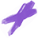

Artist Alley Fanpage
Forum

Om oss
Veckans highlights
Ovan hittar ni veckans highlits inom konstens värld. Nedan kommer ni att kunna läsa om Bokkei, Nicolas Nemiri, Vexx, Kim Jung Gi. Veckans higlights är noga utvalda av AAF admin. Hoppas de ger er inspiration.